TD Tools
Megascans Pipeline Integration System
This system streamlines the acquisition, ingestion, and reuse of Megascans assets across the production pipeline, built around three connected components.
The first component is a Python-based Megascans Library Downloader, which allows the entire Megascans asset library to be downloaded locally in a structured and automated way.
Megascans Library DownloaderThe second component handles pipeline ingestion, taking downloaded assets and converting them into studio-ready resources. This step ensures assets conform to internal naming conventions, directory structures, and pipeline standards before being published.
The third component is a dedicated asset browser UI, which provides artists with a centralized interface to search, preview, import, and export Megascans assets. The browser abstracts the complexity of file locations and pipeline structure, allowing artists to focus on quick asset discovery and reuse.
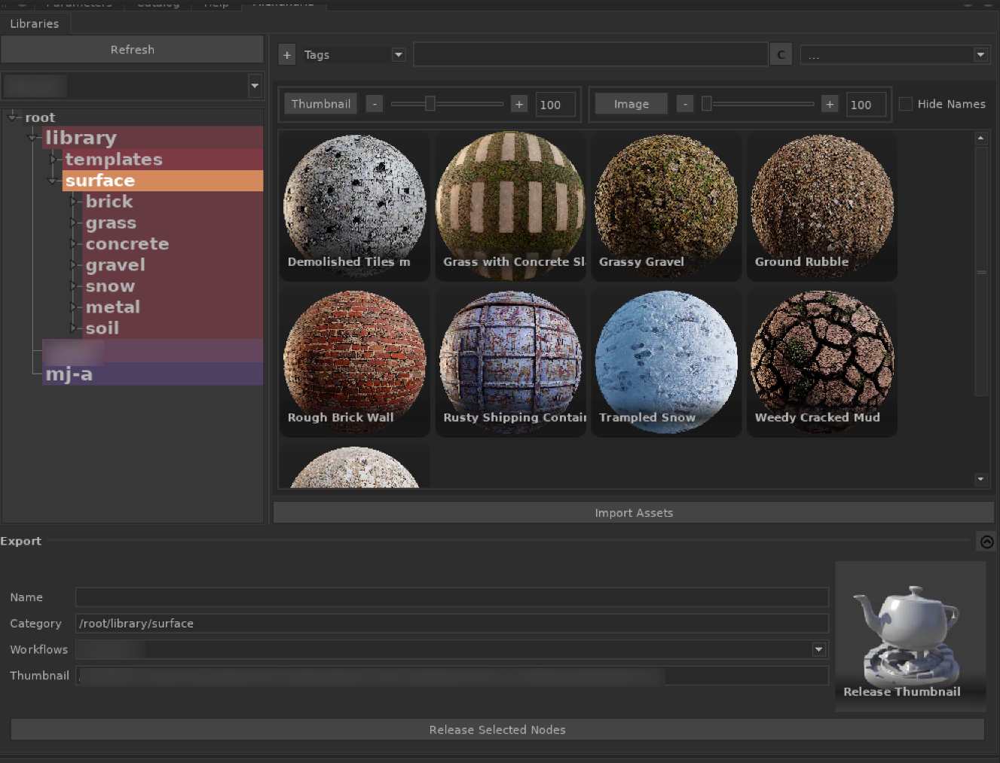
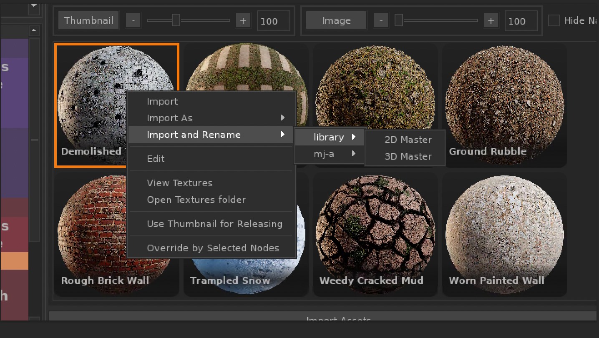
Together, these tools form a complete end-to-end system—from external asset acquisition to production-ready integration—significantly reducing manual setup time and improving consistency across departments.
Megascan to USD
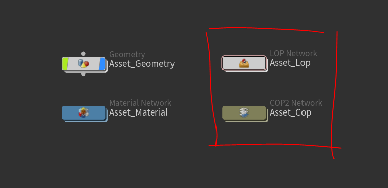
This Houdini tool is made for a personal project and it automates and standardizes the ingestion of Houdini assets originating from Quixel Megascans via Bridge.
After importing a Megascans 3D asset into Houdini, the tool can be executed directly on the selected object node to perform a series of pipeline conversions and setup tasks.
- Constructs a cop network for converting albedo to ACES
- Generates proxy mesh for USD previewing
- Converts the shader from Principled shader to MaterialX
- Generate USD Variants (if applicable)
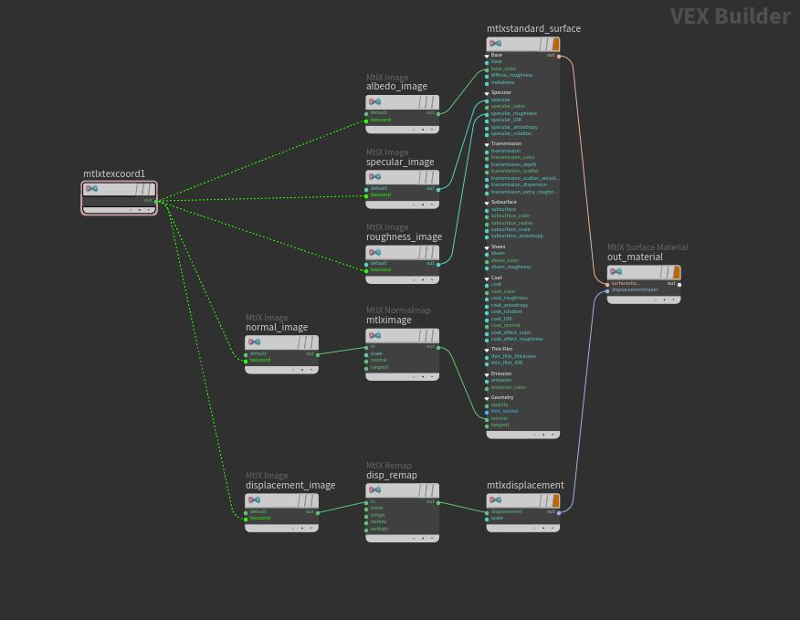
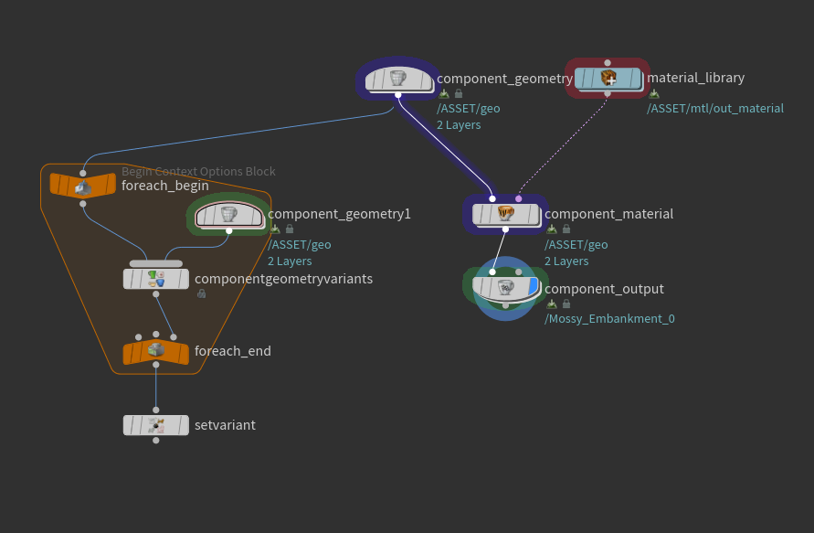
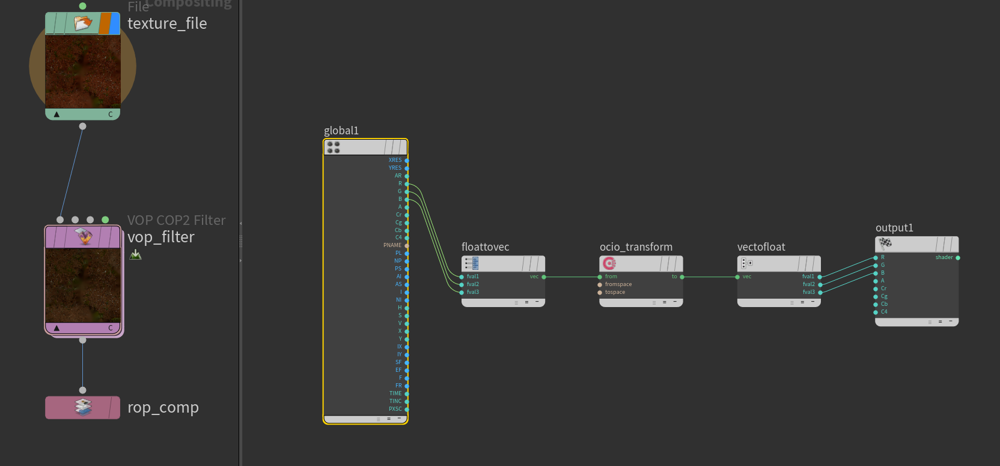
TD Tools
P Mask Gizmo
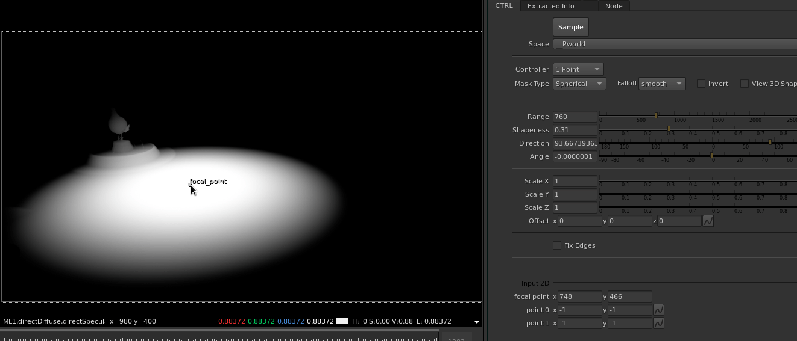
This nuke gizmo allows you to create a mask using the point position aov. Unlike the many gizmos you'll find out there, this gizmo uses 2d handle to generate 3d mask. Under the hood it's sampling the pixle under the 2d handle and manipulating the P matrix
Sequence Viewer
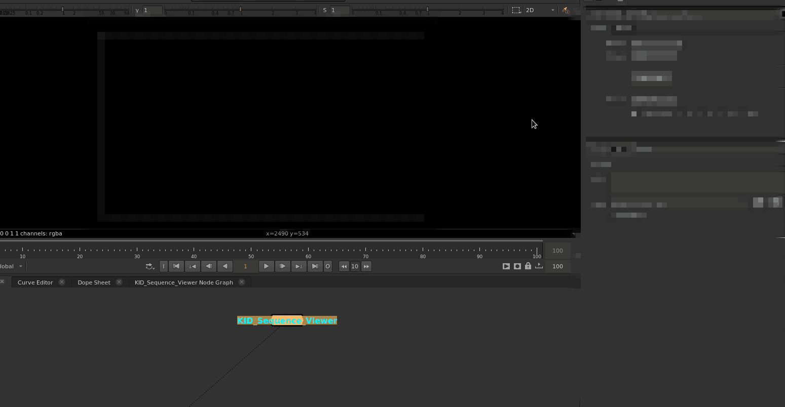
This Nuke tool allows artists to quickly review all shots and sequences within a selected episode in a single unified interface. Shots can be displayed side by side, making it easy to maintain continuity across sequences.
Under the hood, the tool automatically imports all Read nodes and organizes them into a structured network, enabling flexible viewing modes by sequence, individual shot, or custom selection.
Additional features include the ability to import and view shot-specific scripts, as well as advanced filtering options such as approval status, production progress, and assignment (by artist or team member). This helps streamline review workflows and improves overall editorial and continuity tracking.
Precomp Manager
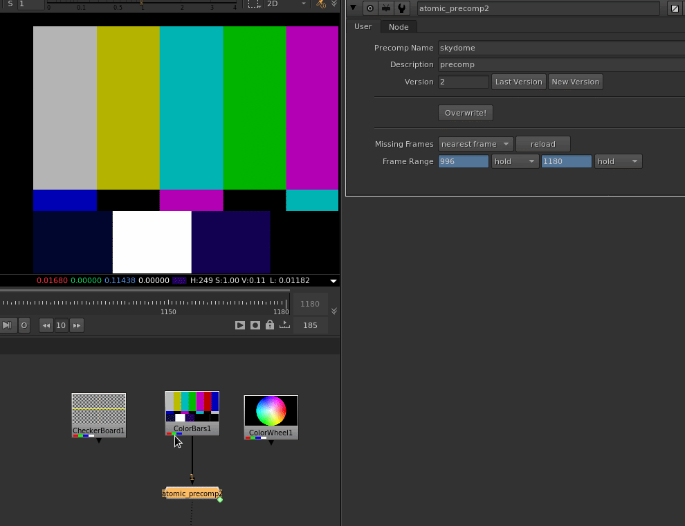
Artists can render any connected node tree directly from the tool, automatically generating and organizing precomp outputs according to the project's naming and versioning conventions. The tool provides built-in controls for creating new versions, incrementing or decrementing existing versions, and overriding previous renders when required.
TD Tools
Artist Library (Agnostic)
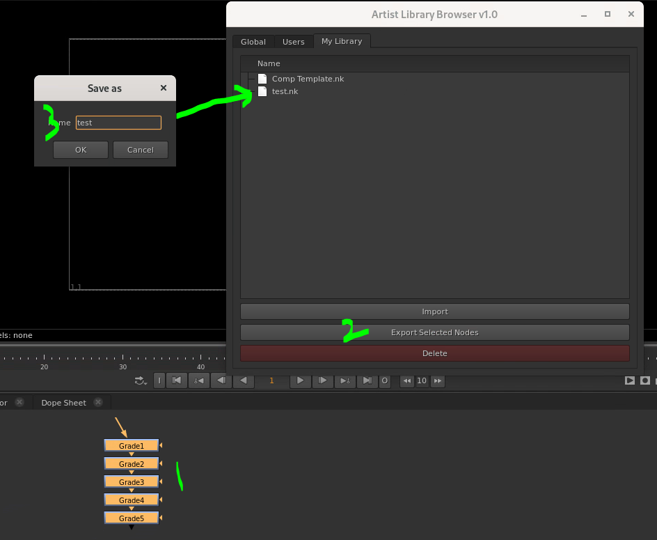
The Artist Library is a tool developed for both Nuke and Katana that allows artists to quickly share, discover, and reuse workflow tools.
Artists can export any selected nodes directly to their personal library with a single click. Once published, those tools become immediately available for browsing and importing by other artists. Supervisors have the additional ability to publish tools to a global library, making approved workflows and utilities accessible across the entire production.
Before the Gizmo Library was introduced, artists typically shared tools manually through files, emails, or chat messages. This often led to duplicated work, lost utilities, and situations where artists knew a useful gizmo existed but could not remember who created it or where it was stored.
The library centralized knowledge sharing and significantly reduced the friction of distributing workflow improvements. Adoption was rapid, with the majority of the team incorporating it into their daily workflow shortly after its release. The result was faster collaboration, better reuse of production-proven tools, and a growing repository of artist-created solutions that benefited the entire department.
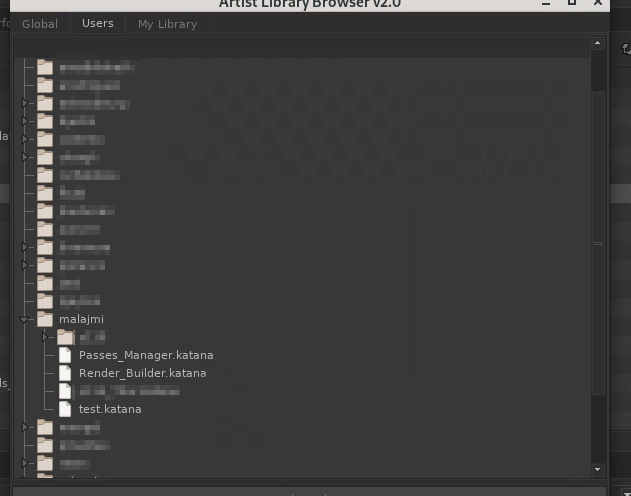
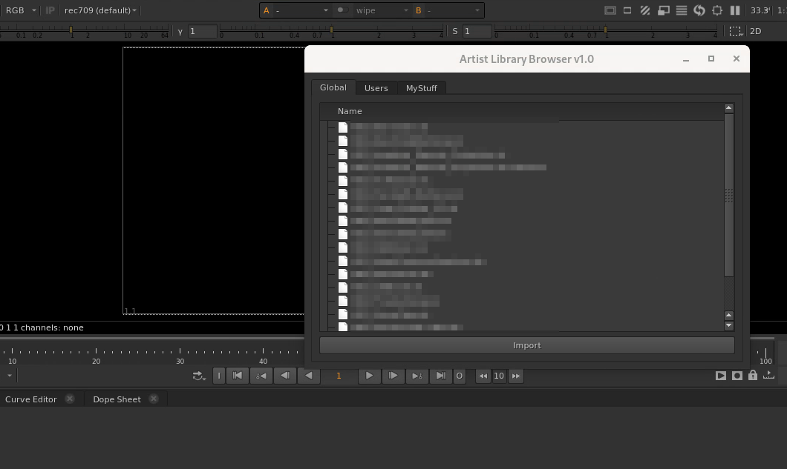
EXR Camera Matrix Visualizer
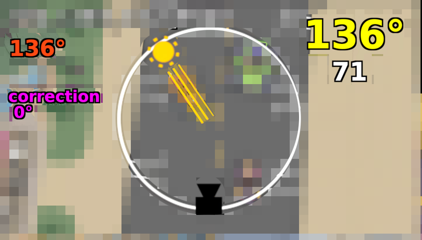
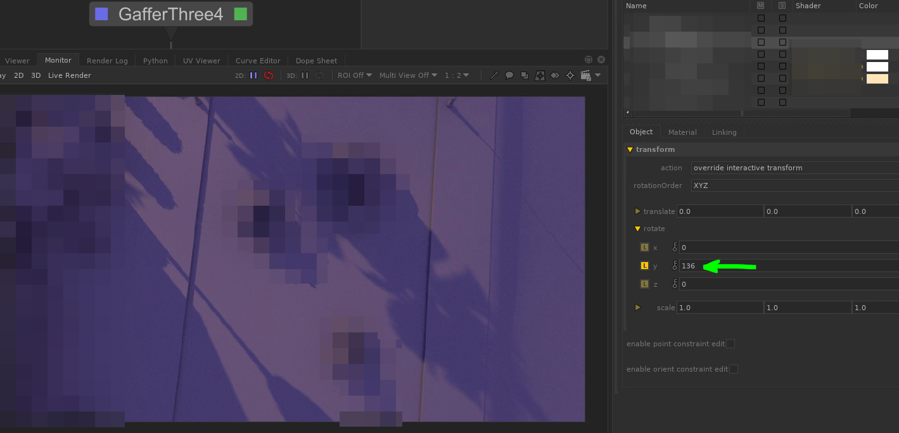
This tool was developed to extract and visualize camera data embedded within low-resolution EXR renders used during look development and lighting reviews.
By reading the camera transformation matrix stored in the EXR metadata, the tool reconstructs camera orientation information directly inside Nuke. This data can then be used to perform a variety of spatial analyses without requiring access to the original 3D scene.
One of the primary applications was lighting visualization. By specifying a light direction, the tool calculates and displays where that light would appear relative to the camera view. This enabled artists to quickly validate lighting setups and understand shot orientation using only rendered images and metadata.
To verify accuracy, the calculated light direction in Nuke was compared against the original light direction used in Katana, producing matching results. This provided confidence that the metadata extraction and transformation calculations were correctly reproducing the spatial relationships from the source scene.
The tool transformed otherwise passive render metadata into actionable production information, enabling faster review workflows and improved communication between lighting and compositing teams.